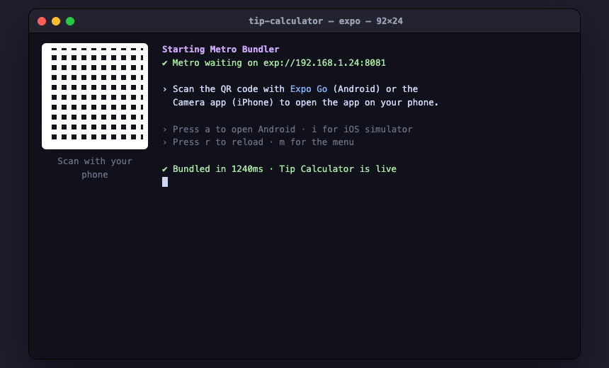

Build your first app
Here are three small things you could build right now — a web app, a web page, and a phone app. Pick whichever sounds fun. You won't write any code; you'll describe what you want in plain English and watch it appear.
You can let the assistant drive every step — just say “walk me through building my first app” — or follow along yourself below. Either way, you'll understand what happened.
What you'll actually do: type one or two short Terminal commands to start a project (we label those “Type in Terminal”), and after that it's all plain English to Claude (labeled “Type to Claude”). Each example explains why you run each command and what's happening, so nothing feels like magic.
Web page vs. web app — what's the difference? A web page is a site you mostly look at (a bakery's page, a portfolio, an online poster). A web app is a site you do things in — it reacts to you and has buttons that change what you see (a to‑do list, a calculator). A phone app is the same idea, but it lives on your phone.
Jump to one:
1A web app — a page that does something
We'll build a little welcome app: it greets you by name, and a button shows a random encouraging message. This is the exact exercise Claude runs with you right after setup.
Step 1 · Start the project
Open the Terminal first — press ⌘ (the Command key) + Space, type Terminal, and press Enter. Then type these two lines (press Enter after each):
Type in Terminal, then Entermkproj hello-launchpad
claudeHere's what each line is for and what it does:
- mkproj hello-launchpad
- Why: every project needs its own folder and a safety net. What happens: it creates a folder at
~/Developer/hello-launchpad(the~means your home folder), moves you into it, and turns on Git — an automatic save-history that lets you undo anything later. - claude
- Why: you want Claude to build inside this folder. What happens: Claude Code starts up right here in the same Terminal window — from now on you just chat with it in plain English; you won't switch apps.
You should see a short welcome and a blinking cursor. The first time, Claude may pause a few seconds or ask to “trust” this folder — say yes. (A command says command not found? Setup may not have finished — see the Help page.)
Step 2 · Describe the app
You're talking to Claude now — plain English, no code. First, swap [Your Name] for your real name, then send this:
Create a small Vite + React + TypeScript app here. Give it a friendly
welcome page that greets [Your Name] by name, and a button that, when
clicked, shows a random encouraging message like "You built this!" or
"Nice work." Then start it so I can see it.Claude plans, writes the code, and starts a local development server — a little web server that runs the app on your Mac, just for you. (Behind the scenes it uses Vite, React, and TypeScript — you don't need to know these yet, but now you've met them.)
Claude may ask a quick question or two before building — that's normal (it plans first, the “Superpowers” way). Just answer. And if anything red appears, paste it back and say “this broke — please fix it.”

Step 3 · See it running
Claude prints a link like http://localhost:5173 (the number may differ — use the exact one it gives you). Click it, or paste it into your browser's address bar. That's your app. Claude can also open the page itself with a built-in tool called Playwright — basically a robot that drives a browser — to check it works before handing it over.

localhost just means “this computer.” Only you can see it until you choose to publish (we'll do that below).
2A web page — a site to show the world
A one‑page site for a small business, a hobby, or yourself — something people visit and read. Same idea, different ask.
Step 1 · Start the project
Type in Terminal, then Entermkproj rosas-bakery
claude- mkproj rosas-bakery
- Why: a fresh folder and undo-history for this new site. What happens: creates
~/Developer/rosas-bakery, moves you in, and turns on Git. Swaprosas-bakeryfor your own name — lowercase, no spaces (use hyphens). - claude
- Why & what: starts Claude inside that folder, ready to build — same as before.
Step 2 · Describe the page
Type to Claude, then EnterBuild a warm, modern one-page website for Rosa's Bakery: a hero with the
name and a tagline, a short "about us", a menu of 4-5 items with prices,
the opening hours, and a contact line. Make it look great on a phone too.
Then start it and show me.Change the details to your own idea (your shop, your band, your résumé). Claude designs the page, writes it, and starts it so you can open it in your browser — exactly like the link in Example 1.

Don't like something? Just say so — “make the header green,” “add a photo gallery,” “put the menu first.” Keep going until it feels right, then use the five moves below to save and publish it.
3A phone app — on your actual phone
A real app you can hold. We'll build a tip calculator and preview it live on your phone while you edit on your Mac.
One free download first: get the Expo Go app on your phone (from the App Store on iPhone or Google Play on Android). It's the app that opens your project on your phone while you build.
Step 1 · Start a phone project
Type in Terminal, then Enterlaunchpad new- launchpad new
- Why: phone apps need a special starting kit (Expo / React Native), so we begin from a ready-made template instead of an empty folder. What happens: it asks what you want to build — choose mobile — then sets up the project, Git, and a private GitHub backup for you, and drops you into the new folder.
Then start Claude in that folder, the same as before:
Type in Terminal, then EnterclaudeStep 2 · Describe the app
Type to Claude, then EnterBuild a simple tip calculator: I type in the bill amount, tap a tip
percentage (15%, 18%, or 20%), and it shows the tip and the total. Use
big, easy-to-tap buttons. Then start it so I can preview it on my phone.Claude builds the screens and the math. To see it on your phone, start the preview server:
Type in Terminal, then Enternpx expo start- npx expo start
- Why: this runs the app's preview server so your phone can connect to it. What happens: the Terminal shows a QR code — point your Camera app (iPhone) or the Expo Go app (Android) at it, and your app opens on your phone. Edit on your Mac and it updates on the phone instantly.

npx expo start shows a QR code. Scan it with your phone to open the app.
The same five moves work for all of them
Whatever you built, the rest is identical — and it's all plain English to Claude. The whole loop is: describe → build → run → change → save → share.
Change something
Ask for a tweak and watch it update instantly:
Type to Claude, then EnterMake the headline bigger and change the background to a soft gradient.This instant update is called hot reload — the page (or phone) refreshes itself the moment Claude saves a change. Keep asking until you like it: “add a dark mode,” “use a rounded button,” “make it bounce.” Don't hold back — Claude doesn't take feedback personally; it has no feelings, just features.
Save a checkpoint
Lock in your progress:
Type to Claude, then EnterSave this as a checkpoint, then back it up to GitHub.Claude makes a commit — a save point on this Mac you can always return to — and pushes it to your private GitHub backup online, so your work is safe even if something happens to the Mac. From now on you can experiment fearlessly; if anything breaks, say “undo the last change.”
Share it
Want to send someone a link?
Type to Claude, then EnterPublish this so I can send someone a link.Claude will deploy it — put it on the internet — usually using Vercel, a free website-hosting service. The first time, a browser tab opens so you can make a free account (use “Continue with GitHub”). Then Claude hands you a real web address.
Published means public. Anyone you send the link to can open it, so don't put anything private on it. Want it locked down? Ask Claude for a password-protected page instead.
🎉 You just built and ran an app
That's the whole loop, and it's the same for anything bigger: describe → build → run → change → save → share. You don't memorize commands; you describe what you want and review the result.
Next, dream up something of your own — a tool you wish existed, a game, a site for something you love — and just ask for it. Stuck for ideas? The Recipes page has copy-paste prompts to start from.
Why did the web developer stay in all weekend? There's no place like localhost.